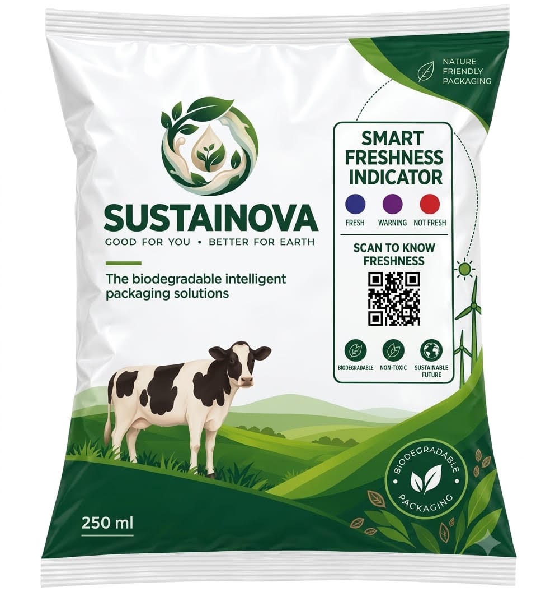

🌱
Biodegradable
Designed with sustainability in mind.
SmartFresh combines a natural colour-changing Indicator with digital image analysis to provide a simple indication of milk freshness.

SmartFresh combines biodegradable packaging with a natural anthocyanin-based colour indicator. As the condition of the milk changes, the Indicator changes colour. The colour can then be analysed digitally to estimate the freshness category.
Designed with sustainability in mind.
Uses colour-changing anthocyanin compounds.
Image analysis helps classify freshness.
SmartFresh connects a natural colour indicator with image-based analysis to transform a visible Indicator response into an understandable freshness indication.
The condition of milk changes over time. These changes provide the basis for the Indicator response monitored by SmartFresh.
The anthocyanin-based indicator responds through a visible colour transition that can be observed on the SmartFresh packaging.
A camera captures the indicator and the image is analysed using RGB values against the calibrated prototype references.
The detected Indicator colour is matched with the prototype reference scale to generate an experimental freshness indication.
SmartFresh uses an anthocyanin-based colour indicator as the sensing element. The visible response can then be captured and interpreted digitally.
Anthocyanin compounds provide the colour-changing sensing response.
The Indicator response moves through the calibrated blue, pink and red reference range.
The Indicator can be photographed using a device camera or an uploaded image.
The detected colour is compared with prototype reference RGB values.
Capture the Indicator with your camera or upload an image. The prototype will analyse the colour response.
Detected Indicator colour:
Detected RGB: —
Closest reference: —
Match confidence: —
SmartFresh explores how packaging can do more than protect food. By combining sensing and digital analysis, packaging can provide additional information at the point of use.